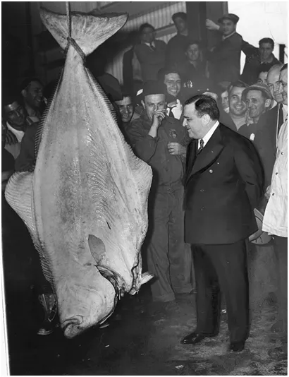
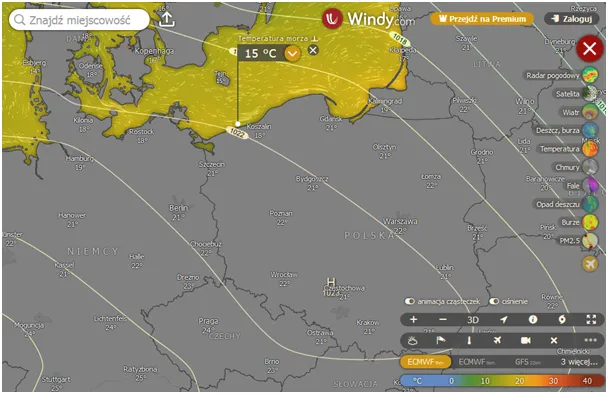
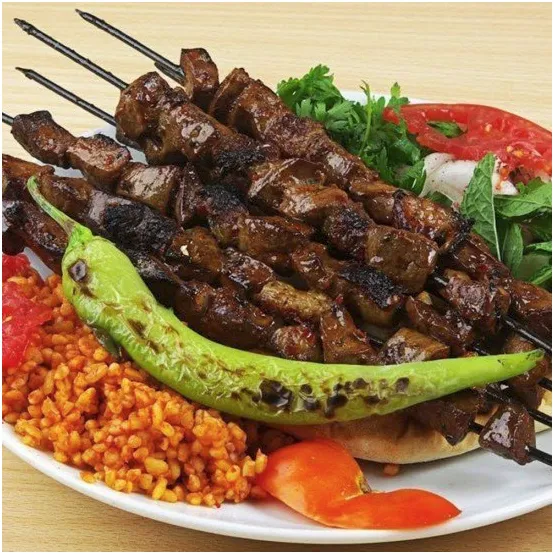
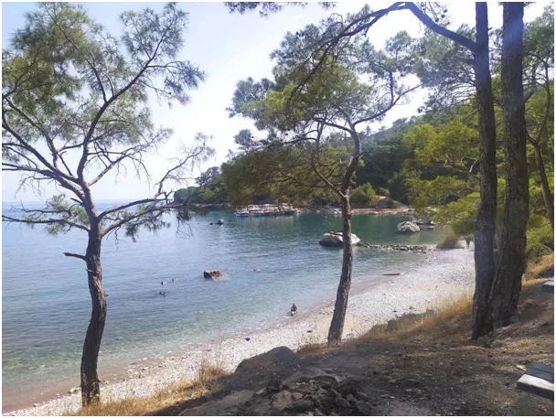

Pierwszy tydzień wakacji w Polsce pod znakiem wyżu, ale na wybrzeżu chłodny wiatr z północy.
Bałtyk niezawodny, orzeźwiające 15 st. C, zdziwienie przy rachunku w smażalni za halibuta "z kutra" gratis. Pytamy dlaczego tak drogo.

Nie może być tanio, bo halibuty żyją za Grenlandią, mąż ze szwagrem pani ze smażalni dwa miesiące płynęli po niego, dla turysty wszystko się zrobi.

Dorada z Turcji to grubo ponad 100 zł za kilo, dlatego za 400 zł kupiłem bilet w dwie strony i poza służbowymi sprawami przez tydzień smakołyki do oporu. Duża porcja szaszłyków z wołowych wątróbek, z młodego byczka 32 zł porcja z sałatkami. w samym centrum Antalyi, wielkiej metropolii turystycznej, ryba 3 razy taniej niż w nad Wisłą, herbata gratis ile kto może wciągnąć.

Wiosna w tym roku w Turcji była wcześnie i Morze Śródziemne już ma 28 st. C. Poza hotelowymi molochami mnóstwo dzikich plaż, gdzie można palić ogień i robić co się chce, np. pływać przy dużej fali. Ale latem trudno tam o duże fale i trzeba poczekać do września. Niby to normalne, ale dla Europejczyka egzotyka. Do zobaczenia na ziemi sułtana! Samoloty po kilkaset zł ciągle dostępne.

Paweł Klimczewski